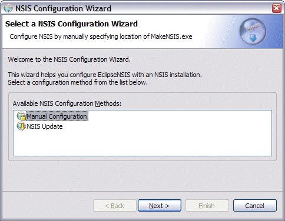

Configuration
EclipseNSIS attempts to
automatically configure itself
with default settings when
run for the first time.
It does this by reading the Windows registry to determine the
installation location of the NSIS software.
On the rare occasion that it cannot self-configure, it will prompt you
to enter the location manually.

Enter the NSIS installation location either by typing it in directly or using the directory browser button to select it.
See the Preferences
section for
further instructions on how to customize the behavior of EclipseNSIS.
Previous | Contents | Next
Copyright © 2004, 2005 Sunil Kamath (IcemanK).